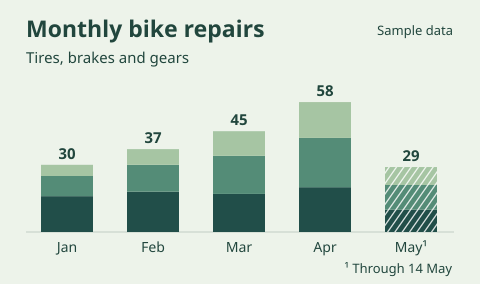
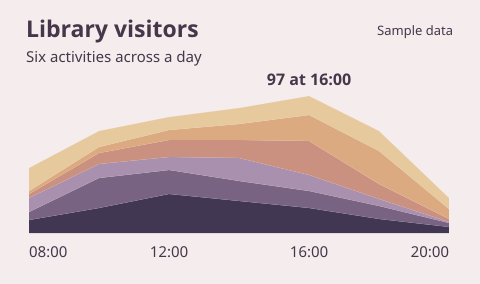
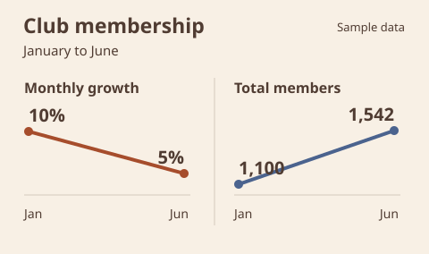
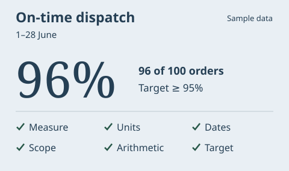

Parts over time→
Which parts account for the change in the total?
What to borrow
- Stack the parts in the same order each period and write the total above each column.
- Give each part a chart with the same scale and dates so changes are comparable.
- Hatch the unfinished period in both views and state how much of it has been counted.

Rhythm over a cycle→
When does each activity peak, and what drives the busiest hour?
What to borrow
- Open with one combined view to show where the activities overlap.
- Separate the series into aligned rows with one scale and label the time and value of each peak.
- Give readers a single time control to inspect the same moment in every row.

Two measures side by side→
How can a growth rate fall while the total keeps rising?
What to borrow
- Put each measure in its own chart with its units in the heading and matching dates on both horizontal axes.
- Label both endpoints in the plots so the reader can see which way each measure moved.
- Give readers one date control to compare the exact values for the same period.

Verdict with checks→
What evidence supports the verdict, and which checks did it pass?
What to borrow
- Give the verdict in one sentence and include the figure that settles it.
- Name the checks so readers can see which definitions, dates and calculations support the judgment.
- Keep the source rows and the calculation behind one disclosure.